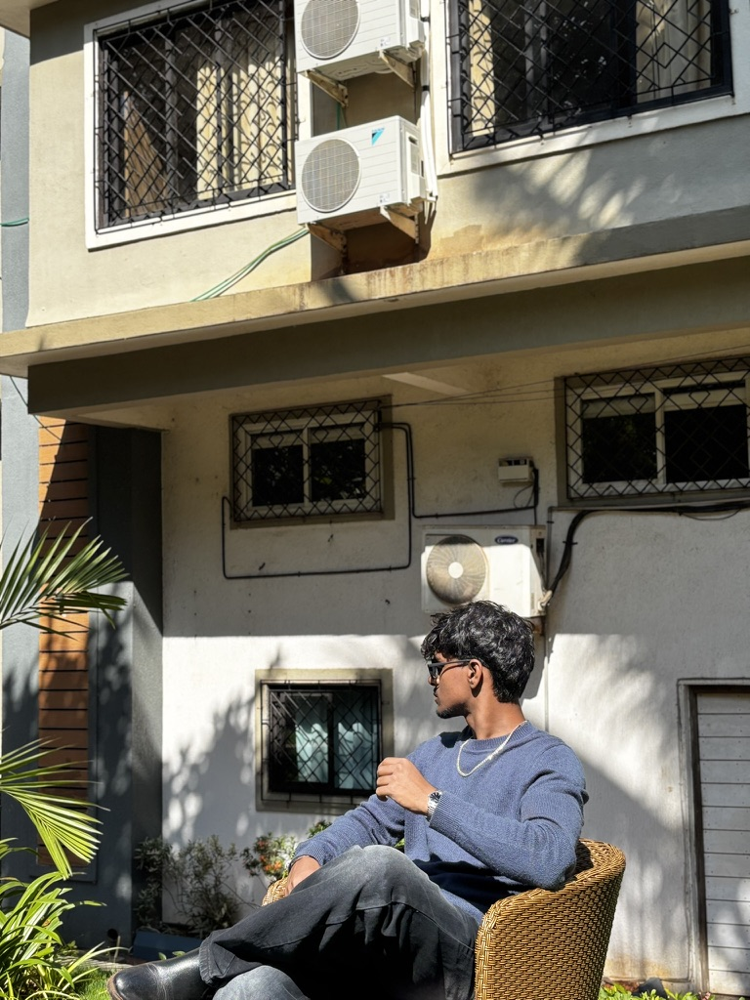

01 / INTRODUCTION
HI, I’M
ABINAVU.
An ECE student designing connected embedded systems that make safety, monitoring and everyday spaces smarter.
- + Hardware + firmware integration
- + Real-time sensor systems
- + Cloud-connected IoT
Embedded systems · IoT · 2026
Open to opportunities
01 / INTRODUCTION
An ECE student designing connected embedded systems that make safety, monitoring and everyday spaces smarter.
02 / SNAPSHOT
03 / ABOUT ME
ECE STUDENT — 2023–2027

FIELD NOTES / 2026I’m Abinavu M, an Electronics and Communication Engineering student specializing in embedded systems and the Internet of Things. I enjoy taking a system from a sensor reading to a useful, reliable action.
My work brings together Arduino, ESP32, STM32, Raspberry Pi and cloud platforms to create real-time monitoring and safety applications.
Understand what the sensor is truly saying before building on top of it.
Test hardware and firmware logic early, then refine for reliability.
04 / CORE EXPERTISE
Firmware and hardware integration for responsive, real-world devices.
Connected sensor systems that monitor, notify and make data useful.
Validated electronic concepts from circuit simulation to hardware bring-up.
Supporting technical work with clear design, documentation and storytelling.
05 / CERTIFICATIONS
NPTEL
NPTEL
SCOUTS & GUIDES
SKILLS FROM MY RESUMÉ
06 / SELECTED WORK
01 / ESP32 SYSTEM
Paired bike and helmet ESP32 units cross-validate impact, helmet, pulse and GPS data before an emergency alert is triggered.
02 / IOT SYSTEM
An integrated ESP32 monitoring system for gas leakage and water-level detection in the home.
03 / INTERACTION
A personal robotics exploration focused on responsive interaction with ESP32-powered hardware.
WORKING PRINCIPLE
“Build systems that listen first — then respond exactly when they should.”
Interested in an embedded system, IoT prototype or hardware concept?
Start a conversation ↗07 / WHAT I BUILD
FROM IDEA TO WORKING PROTOTYPE
Sensor-driven products designed to detect, confirm and notify when it matters.
↗IoT-enabled hardware that takes real-time readings to cloud-connected insight.
↗Practical systems for homes, environments and everyday operations.
↗From circuit concept and simulation to tested firmware integration.
↗